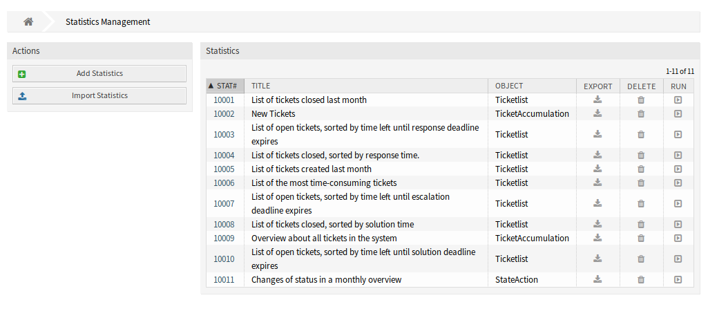
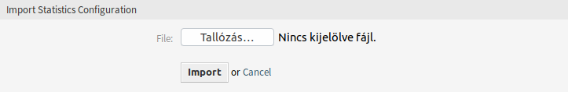
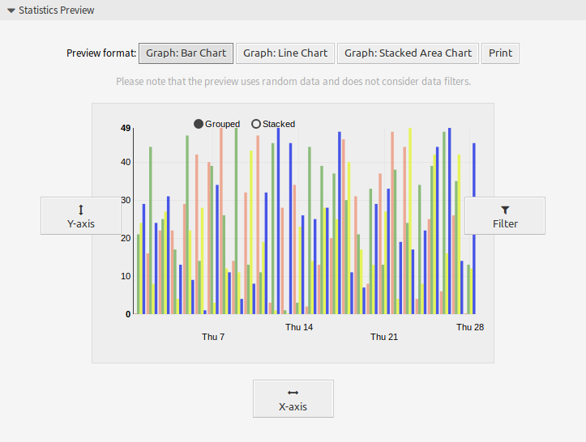

统计¶
使用此屏幕管理统计信息。 默认情况下，新的 OTRS 安装已包含一些统计信息。 统计管理屏幕位于 报告 菜单的 统计 菜单项中。

统计概览屏幕
管理统计¶
OTRS 提供三种类型的统计。

添加统计屏幕
- 动态矩阵
- 每个单元格包含一个单数据点。
- 动态列表
- 每行包含一个实体的数据。
- 静态
- 不可配置的复杂统计。
若要创建一个新统计：
- 点击左侧边栏中的 添加统计 按钮。
- 为新统计选择类型。
- 填写必填字段。
- 点击 保存 按钮。

添加通用设定部分
若要编辑一个统计：
- 点击统计列表中的一个统计编号。
- 修改字段和统计的详细信息。
- 点击 保存 或 保存并完成 按钮。

编辑通用设定屏幕
若要导入一个统计：
- 点击左侧栏中的 导入统计 按钮。
- 点击 浏览 … 按钮，然后选择以前导出的
.xml文件。 - 点击 导入 按钮。
- 修改字段和统计的详细信息。
- 点击 保存 或 保存并完成 按钮。

导入统计配置屏幕
若要导出一个统计：
- 点击统计列表中的下载图标。
- 在计算机中选择一个位置以保存
`.xml文件。
若要删除一个统计：
- 点击统计列表中的垃圾桶图标。
- 点击确认屏幕中的 确认 按钮。
若要运行一个统计：
- 单击统计列表中的运行图标。
- 查看统计详细信息。
- 点击 立即运行 按钮。

查看统计屏幕
若要预览一个统计：
- 转到统计的编辑屏幕。
- 查看预览。
- 更改设置以查看不同类型的图形。
- 使用相应按钮更改 X轴、Y轴 和 过滤器 的值。

统计预览 小部件
注解
预览使用随机数据，不考虑数据过滤器。
通用统计设定¶
添加或编辑此资源时，可以使用以下设置。 标有星号的字段是必填字段。
- 标题 *
- 此资源的名称。 可以在此字段中输入任何类型的字符，包括大写字母和空格。 名称将显示在概览表中。
- 描述
- 向此资源添加其它信息。 为了更清晰，建议始终将此字段填充为带有完整句子的资源描述，因为注释也将显示在概览表中。
- 权限 *
- 你可以为不同的服务人员选择一个或多个组以定义访问权限。
- 结果格式 *
- 您可以选择以哪种格式查看统计信息。
- 时区 *
- 统计中选定的时间段是时区中性的。
- 创建汇总行
- 生成一个额外的行来包含所有数据行的汇总。
- 创建汇总列
- 生成一个额外的列来包含所有数据列的汇总。
- 缓存结果
- 在缓存中保存统计结果，以便在相同配置（需要至少一个选定的时间字段）时能够用于随后的视图。
- 以仪表板小部件显示
将统计信息作为服务人员可以在其仪表板中激活的小部件提供。
注解
启用仪表板小部件将在仪表板中激活此统计信息的缓存。
- 有效性 *
- 设置此资源的有效性。 如果此字段设置为 有效，则每个资源只能在 OTRS 中使用。 将此字段设置为 无效 将禁用此资源的使用。
用于统计的工单属性¶
如果选择了 动态列表 统计信息，则可以使用 X轴 按钮将以下工单属性包括在统计信息中。
- 编号
- 输出中的自动递增整数，以显示行号。
- Ticket#
- 工单编号。
- 总时长
- 从创建工单到现在的相对时间。
- 标题
- 工单的标题。
- 创建时间
- 创建工单时的带时区的绝对日期和时间。
- 最近更改
- 更改工单时的带时区的绝对日期和时间。
- 关闭时间
- 工单关闭时的带时区的绝对日期和时间。 对于处理中的工单，此字段为空。
- 队列
- 工单所在的队列。
- 状态
- 工单的状态。
- 优先级
- 工单的优先级。
- 客户用户
- 工单的客户用户的登录名。
- 客户ID
- 工单的客户用户所属的客户。
- 服务
- 工单服务。 如果未分配服务，则此字段为空。
- SLA
- 工单的SLA。 如果未分配SLA，则此字段为空。
- 类型
- 工单的类型。
- 服务人员/所有者
- 工单的所有者（服务人员）。
- 负责人
- 工单的负责人（服务人员）。
- 所用工时
- 信件中存储时间的累积时间。
- EscalationDestinationIn
- 从当前时间到升级时间的相对时间。
- EscalationDestinationDate
- 工单升级时带时区的绝对日期和时间。
- EscalationTimeWorkingTime
- 在定义的工作时间或服务时间内，直到升级的时间（以秒为单位）。
- 升级时间
- 在最近的升级时间类型（响应、更新或解决方案时间）升级之前的总时间(以秒为单位)。
- 首次响应
- 首次响应的时间戳。
- 首次响应时间（分钟）
- 从创建工单到首次响应(基于工作时间)的时间(以分钟为单位)。
- 首次响应时间差（分钟）
- 指定响应时间与实际响应时间之间的分钟差。
- FirstResponseTimeWorkingTime
- 在定义的工作时间或服务时间内，直到首次响应升级的时间（以秒为单位）。
- FirstResponseTimeEscalation
- 定义工单是否已升级。
- FirstResponseTimeNotification
- 定义是否达到已定义的升级通知时间。
- FirstResponseTimeDestinationTime
- 作为Unix时间戳的升级时间。
- FirstResponseTimeDestinationDate
- 首次响应时间升级的绝对日期。
- FirstResponseTime
- 首次响应时间升级之前的总时间(以秒为单位)。
- UpdateTimeNotification
- 定义是否达到已定义的升级通知时间。
- UpdateTimeDestinationTime
- 作为Unix时间戳的更新时间升级。
- UpdateTimeDestinationDate
- 更新时间升级的绝对日期。
- UpdateTimeWorkingTime
- 在定义的工作时间或服务时间内，直到更新时间升级的时间（以秒为单位）。
- UpdateTime
- 更新时间升级之前的总时间(以秒为单位)。
- SolutionTime
- 解决方案时间升级之前的总时间(以秒为单位)。
- 解决时间（分钟）
- 解决方案时间升级之前的总时间(以分钟为单位)。
- 解决时间差（分钟）
- 指定的解决方案时间与实际解决方案时间之间的分钟差。
- SolutionTimeWorkingTime
- 在定义的工作时间或服务时间内，直到解决方案时间升级的时间（以秒为单位）。
- SolutionTimeEscalation
- 定义工单是否已升级。
- SolutionTimeNotification
- 定义是否达到已定义的升级通知时间。
- SolutionTimeDestinationTime
- 作为Unix时间戳的解决方案时间升级。
- SolutionTimeDestinationDate
- 解决方案时间升级的绝对日期。
- 首次锁定
- 工单锁定时的带时区的绝对日期和时间。 对于未锁定的工单，此字段为空。
- 锁定
- 工单的锁定状态。
- StateType
- 工单的状态类型。
- UntilTime
- 挂起的总秒数。
- UnlockTimeout
- 工单自动解锁之前的时间。
- EscalationResponseTime
- 响应时间升级的Unix时间戳。
- EscalationSolutionTime
- 解决方案时间升级的Unix时间戳。
- EscalationUpdateTime
- 更新时间升级的Unix时间戳。
- RealTillTimeNotUsed
- 挂起时间的Unix时间戳。
- 信件数
- 工单中的信件数。
- 流程
- 涉及流程工单的流程名称。
- 活动
- 流程中活动的名称。
- 活动状态
- 流程中活动的状态。
- DynamicField_NameX
- 添加到系统中的动态字段的名称。 每个系统中的动态字段列表不同。